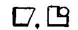
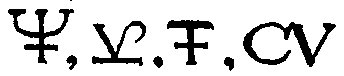
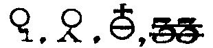
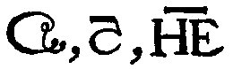
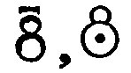
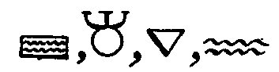

partie I - II - III -
partie I - II - III -
revu le 9 novembre 2003abréviations : sy : symbole - d : droite - g : gauche. Tous les extraits de Pernety sont tirés du Dictionnaire Mytho-hermétique.
liste : camphre - cémentation - cendre - cendres gravelées - céruse - chaux métallique - chaux d'oeuf - chaux d'or - chaux de vitriol - chaux vive - cinabre - cinabre d'antimoine - cire - coaguler - cobalt - corail - corne de cerf - crâne humain - creuset - cristallisation - cristal de Saturne - cucurbite - cuivre, Vénus - décoction - demie partie - digérer - dissolution - distillation - eau - eau bouillante - eau commune - eau de chaux -
sur le camphre, voyez l'Atalanta, VII et l'Introïtus, VI.
Geber parle de cette opération quand il procède aux différentes façons d'essayer l'or :
« Chauffer trois jours et trois nuits au rouge, sans fusion, des lamelles du métal à essayer recouvert d'un cément formé de matières telles que vitriol, sel ammoniac, verdet, auxquelles on ajoute un peu de poudre de brique, et peu de soufre, si l'on veut. On humecte le tout d'urine d'homme et on enduit chaque lamelle de ce mélange. Les métaux précieux seuls résistent. »
Rappelons que la nature réalise, lors du métamorphisme des roches, des opérations de transport moléculaire qui s'apparentent à la cémentation [Daubrée, Mémoire sur le métamorphisme]. il s'agit en fait d'une sorte de calcination sèche.
Que n'a-t-on pas dit sur les cendres ? Il faudrait citer presque chaque page de ce site, tant la cendre s'y montre importante.
Pernety : Les Sectateurs de la science Hermétique appellent souvent cendre la matière, de la pierre putréfiée dans l'aludel, parce que la chaleur extérieure agissant sur le mixte du vaisseau, en sépare l'humide qui en liait les parties, et après l'avoir desseché, laisse le mixte comme une poudre, ou cendre, et la matière dans cet état est en putréfaction ou corruption; car l'un et l'autre terme se prennent indifféremment pour signifier la même chose. Les Philosophes Hermétiques disent qu'il ne faut pas mépriser la cendre, et Morien dit qu'elle est le diadême du Roi. Il faut entendre ces termes de la matière après qu'elle a été en putréfaction; parce qu'alors elle semble de la cendre, et que de cette cendre doit sortir le soufre philosophique, qui est le diadême du Roi.
CENDRE DE TARTRE . Soufre des Philosophes parfait au rouge.Tout ce qui touche à la cendre ressortit de la chaux, qu'il s'agisse de celle des métaux ou de celle des minéraux. Le sy. g. représente un E dont la petite barre est disposée en forme de croix. Voyez le poème du phénix et l'Escalier des Sages sur cette lettre E.
Le symbole du milieu est très proche de celui de Saturne et on y devine aussi une demi-lune. c'est avec cette matière que Bernad Palissy travaillait à ses émaux :
« Les esmaux de quoy je fais ma besongne sont faits d'estaing, de plomb, de fer, d'acier, d'antimoine, de saphre, de cuivre, d'arène, de salicort, de cendregravelée,de litharge, de pierre de Périgord. Voilà les propres matières desquelles je fais mes esmaux. »
Ces cendre gravelées se rapportent à la potasse. On commence par dessécher les lies de vin en les exposant, par exemple, au soleil pendant un temps suffisant. Lorsqu'on agit par pression, on recueille le vin aigri que renferme encore la lie et le liquide que l'on recueille donne un très bon vinaigre . La combustion des lies de vin s'opère dans de larges fours. On commence par y faire brûler des fagots de sarments puis on jette sur les cendres de ces fagots, la lie desséchée. Dès qu'elle est enflammée, on la laisse brûler sans la remuer, et on alimente le feu en y projetant de nouveaux pains de lie, de manière que le feu soit entretenu jusqu'à ce que le fourneau soit rempli du résidu de la combustion. Ce résidu forme une masse légère, spongieuse , cassante et de couleur verdâtre, qui porte le nom de cendres gravelées. Ces cendres gravelées n'ont que peu d'intérêt au plan commercial, mais l'alcali qu'elles renferment est très pur. Le tartre qui est contenu dans le vin et qui s'est précipité avec la lie et les dépôts des tonneaux, est le produit qui fournit la potasse. Ce tartre est un mélange de tartrate acide de potasse et de tartrate de chaux. Décomposé par le feu, il laisse du carbonate de potasse mêlé de carbonate de chaux. On doit à M. Dubrunfaut une autre source de potasse beaucoup plus importante : les mélasses de betteraves . L'idée de départ est qu'après extraction du sucre, tous les composés alcalins ou terreux qui existent dans le tissu de la betterave, doivent être concentrées dans le résidu des opérations, c'est-à-dire dans les mélasses. [cf. compendium]. Comme on peut le constater, la cendre gravelée est d'une importance fondamentale pour l'oeuvre. On comprend mieux aussi l'insistance des vieux auteurs touchant au vinaigre [en dehors du vinaigre philoosphique qui est le premier état du Mercure].
La céruse est un symbole très ancien, puisqu'on retrouve ce mot chez Zosime :
« Construis, mon ami, un temple monolithe , semblable à la céruse, à l'albâtre, un temple qui n'ait ni commencement ni fin, dans l'intérieur duquel se trouve une source de l'eau la plus pure, brillante comme le soleil. C'est l'épée à la main qu'il faut chercher à y pénétrer, car l'entrée est étroite. Elle est gardée par un dragon qu'on doit tuer et écorcher. En réunissant ses chairs et ses os, il faut en faire un piédestal sur lequel tu monteras pour arriver [...] » [cf. prima materia]
On reste d'ailleurs étonné de la modernité du texte qu'on retrouve, à très peu près, dans de nombreux traités d'alchimie. La céruse [carbonate de plomb, de couleur blanc] était obtenu à partir de plomb et de vinaigre : A Rhodes, par exemple, on plaçait des sarments dans des jarres au fond desquelles on avait versé du vinaigre, et sur les sarments on disposait des saumons [type de lingot métallique tel qu'il sort du moule des fonderies, surtout de plomb et d'étain] de plomb ; puis on bouchait les jarres avec des couvercles pour empêcher les vapeurs de s'échapper. Après un temps déterminé, on ouvrait, et l'on trouvait la céruse qui s'était formée à partir des saumons de plomb. L'auteur ajoute que le procédé se retrouvait à Corinthe et à Sparte. Préparé par des procédés industriels, il contient toujours de l'oxyde de plomb hydraté, i.e. du carbonate basique de plomb. Il porte alors le nom de céruse, de blanc de plomb ou de blanc d'argent. Sa formule est 2PbCO3Pb(OH)2. Il est obtenu par action conjuguée sur le plomb des vapeurs d'acide acétique, de l'oxygène et de l'acide carbonique. Dans un cours de chimie, professé au XIXe siècle, nous avons trouvé un autre procédé de préparation de la céruse où là encore, on peut faire quelque rapprochement avec des textes alchimiques. Il s'agit du procédé hollandais ; il consiste à exposer des lames de plomb, sous l'influence d'une température de 35° à 40°, à l'action simultanée de l'air, de l'acide carbonique et des vapeurs de vinaigre. L'air oxyde le plomb, la vapeur de vinaigre se combine avec cet oxyde et forme de l'acétate basique, l'excès de base de ce sous-sel se combine avec l'acide carbonique et produit du carbonate de plomb maintenu à l'état de sel basique. Dans ce procédé, l'acide carbonique et la chaleur sont fournis par la fermentation du fumier. En effet, on introduit des lames de plomb tournées en spirale dans des pots faits de telle sorte que les lames restent suspendues sur le vinaigre qui se trouve dans le fond. Fermés grossièrement par une plaque de plomb, les pots sont disposés dans une couche de fumier de cheval et recouverts par de la paille. On peut former une série d'étages superposés et arranger ainsi un grand nombre de vases sur un petit espace. La céruse obtenue est opaque et amorphe. Le fait intéressant est qu'on peut utiliser la litharge [oxyde de plomb] et la céruse comme fondant : entre 500 et 600°C, l'alumine donne avec dix fois son poids de litharge un mélange qui se fond assez bien pour être coulé. La matière est compacte, d'un jaune de cire, opaque et un peu cristalline. Les argiles (silicates d'alumine) exigent pour se fondre une quantité de litharge d'autant plus grande qu'elles contiennent plus d'alumine. Le kaolin lavé, qui renferme plus d'alumine que toute autre argile, donne une pâte liquide avec 5 fois son poids de litharge. La matière est compacte, sans bulles, à cassure choncoïde, éclatante, transparente, et d'un assez beau vert-olive. Quand on emploie un mélange de litharge, de chaux caustique et d'argile, le mélange se fond assez facilement en pâte liquide. La matière refroidie est compacte, à cassure cireuse, grisâtre et opaque.
Enfin, les Grecs modernes ont assimilé parfois le sory à la céruse brûlée [minium, qu'il faut distinguer du sel mercurique homonyme]. Cette céruse, soumise au grillage, était convertie en minium [qu'il faut distinguer du sel mercurique homonyme], et employée comme fard par les dames romaines. La céruse ou blanc de plomb doit nous faire réfléchir aux accointances avec le plumbum album qui désigne l'étain ; ou le blanc d'Espagne qui désigne du sous nitrate de bismuth.
Notez que dans les recettes de préparations de pierres précieuses artificielles, de cinabre, de vert-de-gris et de céruse, ces trois préparations vont toujours ensemble chez les anciens auteurs.
Théophraste, Dioscoride et Pline décrivent la céruse [ blanc de plomb ] et en indiquent l'emploi comme d'une couleur blanche la plus commune. Ils parlent aussi de différentes espèces de craies [blanc d'Espagne] et d'argiles destinées au même usage. Il semble, pourtant, que Davy n'ait pas rencontré de céruse dans l'analyse des couleurs anciennes. Voyez par ailleurs ce que nous disons de la céruse dans la section Mercure.
Là encore, c'est un des symboles majeurs de l'oeuvre. Il faut retenir ici l'identité des lettres C et G ; C désigne la 3ème lettre et G la 7ème lettre [elle correspond à la lettre C inversée]. Voyez là-dessus nos Gardes du Corps.
Pernety : En termes de Chymie, se dit de toutes formes de corps réduits en poudres impalpables, soit par l'action du feu, soit par les eaux fortes. Quelques-uns prétendent qu'on ne doit donner le nom de Chaux qu'aux poudres des corps métalliques ou des minéraux; et que celles des autres doivent se nommer cendres. On dit Chaux de Lune ou d'argent, Chaux de Saturne ou de plomb, etc.
CHAUX DES PÉLERINS. C'est le tartre.
CHAUX-VIVE est aussi un terme de Science Hermétique, que les Sages ont employé pour Signifier la matière au blanc.Sur la chaux en tant que telle, voyez compendium ; sur les oxydes, voyez Soufre et humide radical métallique. Sur la manière de réaliser des chaux métalliques, voyez bain des astres, salpêtre, tartre vitriolé.
Il faut comprendre cette expression cum grano sali. L'oeuf vitriolé étant le vaisseau de nature de l'alchimiste, la chaux d'oeuf peut s'entendre soit de la coque, soit du jaune. Par la coque, elle s'apparente à la mérelle ; par le jaune, elle s'apparente à l'Or philosophique. Cette expression est très rare et n'apparaît pas dans les traités courants.

Stricto sensu, la chaux d'or est le Soufre rouge dissous [c'est-à-dire sublimé] dans le Mercure. L'expression calx auri a été utilisée par Basile Valentin lorsqu'il a décrit la la préparation de l'or fulminant : l'auteur fait d'abord dissoudre l'or dans l'eau régale et le précipite par l'huile de tartre (solution de carbonate de potasse). Il décante ensuite le liquide et recueille le précipité pour le sécher à l'air. Il prévient du danger de dessécher ce précipité au feu ou seulement à la chaleur du soleil ; car cette chaux d'or, calx auri, disparaitraît aussitôt avec une violent détonation. Morien parle de l'Etheb d'or, concept assez nébuleux qui serait une sorte de chaux d'or transmutée [cf. Entretiens de Morien à Calid]. On peut encore citer Dulco :
« Broyez bien subtilement cette chaux d'or, et l'imbibez avec le vinaigre vitriolé - du vinaigre distillé, contenant une dissolution de sel commun, soit trois livres de vinaigre pour une once de sel - , en sorte que cette chaux soit un peu humide. Mettez ensuite cette chaux dans un petit creuset, et chauffez jusqu'à ce qu'elle devienne blanche et spongieuse comme du coton. Dissolvez cette chaux d'or spongieuse dans de l'eau de sel ammoniac et de salpêtre, digérez et ditillez, afin que tout l'or passe par l'alambic ; ajoutez à cette dissolution d'or deux onces de la sudite huile de nitre ; ensuite distillez si souvent l'eau des deux champions, c'est-à-dire du sel ammoniac et du salpêtre de dessus ce composé, qu'enfin l'or s'unisse bien avec la susdite huile, et demeure comme une huile fixe, incoagulable tant à la chaleur qu'à froid. » [Recueil de M. Duclos sur la transmutation des métaux (mss n° 171 de la bibliothèque de l'Arsenal) fol. 5]
Sur les dissolutions auriques, voyez notre voie humide. Elle est inséparable du plumbum album. Albert Le Grand, dans le Composé des composés [qui est certainement apocryphe] écrit :
« Si tu veux faire l'élixir rouge, sers-toi de chaux d'or très jaune, préparée selon l'art. Il n'y a pas d'autres ferments que ceux-là. Le ferment de l'argent est l'argent, le ferment de l'or est l'or, ne cherche donc pas ailleurs. La raison en est que ces deux corps sont lumineux, ils renferment des rayons éclatants qui communiquent [...] »
Nous n'insisterons pas sur le degré de confiance qu'il faut avoir de ces assertions. Le fait de la coloration rouge du verre par l'or avait été signalé par Libavius. Les chimistes, à l'exception de Boyle, n'y firent pas grande attention. Ce fut accidentellement que Glauber découvrit cette propriété de l'or :
« Je fis, raconte-t-il, fondre, il y a quelques années, dans un creuset, de la chaux d'or, calcem salis ; et voyant que la fusion s'opérait difficilement, j'y ajoutai un peu de flux salin. L'opération étant terminée, je retirai le creuset du feu, et je fus fort surpris de trouver, à la place de l'or que j'y avais mis, une masse vitreuse d'un beau rouge de sang. Les fondants que j'avais employés étant des sels blancs, je ne pouvais attribuer cette coloration qu'à l'âme de l'or (anima auri). »
Voilà une expérience typique qui a dû, dans un lointain passé, abuser les alchimistes qui croyaient réellement qu'une transmutation avait dû s'opérer. Retenons que de nombreux sels furent ainsi découverts, complètement à leur insu, des amateurs de l'Art sacré ; la plupart n'ont certainement rien écrit ; d'autres comme Glauber ont fait une relation de leurs essais dont l'interprétation devait être mesurée à l'aune du paradigme en cours.
Le parti que Glauber sut tirer de cette observation montre toute sa sagacité d'opérateur. Pour obtenir la même coloration il proposa un moyen détourné, mais extrêmement ingénieux. Ce moyen consistait à précipiter l'or de sa dissolution dans l'eau régale par la liqueur des cailloux, et à faire fondre le précipité dans un creuset :« La couleur jaune se convertit en une couleur pourpre des plus belles. »
L'auteur ajoute que le même procédé pourra s'appliquer à tous les autres métaux pour la préparation des verres colorés ou des pierres précieuses artificielles. Curieux de se rendre compte des phénomènes soumis à son observation, Glauber se demandait ce qui se passe lorsqu'on verse la liqueur des cailloux dans une solution d'or. Voici à ce sujet sa manière de voir :
« L'eau régale qui tient l'or en dissolution, tue le sel de tartre (potasse) de la liqueur des cailloux (silicate de potasse), de manière à lui faire abandonner la silice; et, en échange, le sel de tartre paralyse l'action de l'eau régale, de manière à lui faire lâcher l'or qu'elle avait dissous. C'est ainsi que la silice et l'or sont tous deux privés de leurs dissolvants. Le précipité se compose donc à la fois d'or et de silice, dont le poids réuni représente celui da l'or et de la silice employés primitivement. »
Si on emploie l'étain, le plomb, l'antimoine, le bismuth et l'arsenic, les résultats de ces opérations sont des chaux d'or, suceptibles de se vitrifier au moyen des substances vitreuses qu'on y ajoute et qui en recoivent une couleur pourpre...Les précipités que l'on obtient par l'intermède du plomb sont d'un gris-noirâtre ; celui de l'étain est pourpre. Il a conduit à la découverte du pourpre de Cassius [cf. voie humide].
Il s'agit de la sélénite parce que les Anciens croyaient que cette substance avait la propriété de croître et de décroître avec la lune [ ce qui n'est pas faux si l'on connaît la cabale hermétique ]. On l'a aussi appelé pierre spéculaire, ce qui veut dire miroir, à cause de la transparence de ses cristaux. Ou encore, spath séléniteux, albâtre gypseux, parce que certaine variété ressemble à l'albâtre proprement dit ; enfin, il a été nommé chaux vitriolée,vitriol de chaux. On voit donc combien il est proche de l'alun et nous n'hésiterons pas à dire que ces sels sont congénères et se rapportent donc en tout point à ce qu'écrit Michel Maier dans l'emblème IV de l'Atalanta fugiens : nous avons affaire à des isotopes spirituels. Lorsque le gypse, par la chaleur, est devenu anhydre, il prend le nom de plâtre, mot indiquant le pouvoir de former, d'imiter [ et c'est bien ainsi que l'entendent les Artistes, si l'on nous entend avec un grain de sel ]. Le sy. d. est apparenté à celui de Jupiter et aussi à celui de la céruse.

Symbole complexe, la chaux vive allie le feu à l'eau. C'est donc avec raison qu'il faut la représenter par Neptune [sy. g.].Voyez surtout : Atalanta, III et humide radical métallique.

C'est l'un des serpents de mer de l'alchimie ; l'un de ces épouvantails que l'on voit surgir périodiquement dans les traités. Ce pauvre cinabre, à l'instar de l'antimoine, a été porté au creuset plus que de raison par les souffleurs et les archimistes. On l'appelle encore dragon rouge. Il paraît que quelques amoureux de science sont persuadés que le grand secret se trouve dans le cinabre. Qui oserait aller contre ? Retenons le sy. d. n°2 qui combine l'hiéroglyphe de la stibine et celui du sel marin. tendue. On peut regarder le cinabre comme le premier produit de la décomposition du vif-argent ; des savants ont cru voir une deuxième couronne dans une mine de mercure cornée volatile ou mercure doux natif : il se présente comme du mercure solidifié et minéralisé par l'acide muriatique avec lequel il paraît s'être sublimé : il est utilisé dans notre Art par la voie humide pour préparer les sels d'étain dans le pourpre de Cassius. Le cinabre est, dans la version orthodoxe de l'alchimie, la terre-mère des métaux, d'où la relation au signe chthonien [le sy. d. n°2].
Pernety : Matière métallique, de laquelle on tire le mercure vulgaire. Les anciens donnent aussi ce nom au sang de dragon. Pline, liv. 33, ch. 7, dans son Histoire Naturelle, l'appelle Cinabre des Indes, pour le distinguer du métallique; et ajoute qu'il se forme du sang des dragons qui se battent contre les éléphans, dont l'énorme poids les accable, quand l'éléphant tombe sur eux en mourant.
On trouve aussi le nom de Cinabre dans plusieurs Auteurs, pour dire Minium. Plusieurs Chymistes ont mal-à-propos pris le Cinabre vulgaire et naturel pour la matière de l'œuvre des Philosophes; on ne saurait en tirer que du mercure commun, ou argent-vif vulgaire. Le Cinabre des Sages est leur mercure sublimé, purifié, fixé au rouge, qu'ils appellent soufre. C'est alors ce serviteur rouge dont parle Trévisan.
Au signe précédent s'est ajouté la barre horizontale du sel nitre. On peut recueillir ce principe sulfureux de l'antimoine en le distillant avec le sublimé corrosif ; car pour lors en se détachant
de la terre métallique de l'antimoine, il se joint au mercure du sublimé, et forme le cinabre d'antimoine : sa terre métallique passe par la distillation avec les acides du sublimé, et forme le beurre d'antimoine. Si on précipite cette terre, on aura ce qu'on appelle la poudre d'Algaroth : en la fondant ensuite on la convertit en verre, parce qu'elle est dépouillée de la plus grande partie de son soufre.
Dans cette acception, le cinabre d'antimoine serait équivalent au beurre d'antimoine [chlorure d'antimoine].
Ces signes sont congénères de la chaux ; la cire est évoquée par les alchimistes comme un produit appartenant à la série sulfurée. Quand bien même Pernety affirme-t-il que la cire est la matière des alchimistes poussée au blanc. Quoi qu'il en soit, les Adeptes affirment que leur matière coule comme de la cire si le Mercure a été préparé d'une façon canonique. Note que la cire est de couleur jaune ; la matière prend cette couleur à peu près lors du régime de Vénus. Est-ce un hasard si l'on voit le signe de la Balance surmontant le C du sy. g. ? Il faudrait encore évoquer les abeilles . Il nous paraît
d'autant plus important d'y consacrer ici quelques mots, qu'un texte juridique moyen-gallois dit que :
la noblesse des abeilles vient du Paradis et c'est à cause du péché de l'homme qu'elles vinrent de là ; Dieu répandit sa grâce sur elles et c'est à cause de cela qu'on ne peut chanter la messe sans la cire [d'abeille]. L'abeille se rattache au symbole royal, de type solaire, mais qui n'est encore qu'à peine perceptible et, pour tout dire, nébuleux. Il s'agit donc du symbole de l'âme, parfois identifiée à Déméter dans la religion grecque, où elle peut figurer l'âme descendue aux Enfers.

C'est l'une des deux opérations majeures du magistère, selon la formule Solve et Coagula. L'expression de cette opération qui la définit de la manière la plus exotérique semble être la sublimation du Mercure. Et la fixation subséquente.
Pernety : En termes de Chymie Hermétique, signifie donner une consistance aux choses liquides, non en en faisant un corps compact, ou dont les parties seraient liées comme celles du lait devenu fromage, mais en les desséchant de leur humidité superflue, et en réduisant le liquide en poudre, et puis en pierre. Les Philosophes Chymiques appellent aussi coaguler, cuire la matiere jusqu'à la perfection du blanc ou du rouge.
Nous ajouterons que les alchimistes ont souvent voilé cette séparation en disant qu'il fallait guérir le corps de son hydropisie. En médecine, nous utilisons certains diurétiques ; le diurétique de l'oeuvre est le feu secret qui se consume lui-même. Notez que le sy. d. est formé de la lettre E et de la lettre H surmontées d'un trait qui signifie - [moins]. Sur la lettre E, voyez le poème du phénix.
.
Brandt a étudié un minerai étrange de couleur bleue et a d'abord cru qu'il s'agissait d'un minerai de cuivre. Toutefois, dès que récupéré, ce cuivre ne ressemblait pas à l'habituel. Les mineurs crurent donc à un envoûtement du minerai par les Esprits de la Terre : les kobolds . En 1730, après avoir démontré que ce minerai ne contenait pas de cuivre, il en conclut qu'il tenait entre ses mains un métal nouveau dont la couleur et les propriétés ressemblaient au fer. Ce métal fut appelé cobalt, d'après le nom des Esprits de la Terre. Le cobalt ne fut donc découvert qu'en 1735 par G.Brandt, mais un minerai portant le même nom, et dont il fut extrait, était connu depuis fort longtemps . Le nom de cobalt dérive de l'allemand Kobold. Ce terme désignait, dans les légendes des mineurs, des gnomes et autres esprits malins s'en venant la nuit saboter le travail des mineurs en corrompant le bon minerai. Tout cela nous rappelle ce qu'écrit Fulcanelli au sujet des gnomes et des farfadets. Voyez aussi le manuscrit étrange qui s'appelle la Génération des métaux, préfacé par A. Daubrée. Le cobalt n'était, à l'époque, perçu qu'en tant qu'impureté et n'avait pas été considéré comme un métal particulier.
D'après le docteur Hoëfer, Paracelse aurait peut-être appliqué le nom de cobalt au métal que nous désignons par ce nom, ou plutôt à l'un de ses alliages ; car le cobalt n'a été distingué comme un corps particulier que dans le XVIIIe siècle. Glauber a examiné si les corps qu'il appelle minéraux, tels que le sulfure d'antimoine , l'arsenic, l'orpiment, le cobalt, le zinc, le soufre, sont conversibles en métaux. Il se prononce pour l'affirmative, et les considère comme des embryons de métaux, comme des fruits verts. A ce titre, divers minerais, de nombreux sels étaient désignés comme la véritable minière des métaux ; évidemment il ne s'agissait que des gangues. Quelques anciens chimistes appellent aussi cadmie fossile un minerai de cobalt [répondant à notre arséniosulfure actuel].
Selon Berthelot, il est possible que les Egyptiens aient employé du cobalt dans les couleurs qu'ils appliquaient sur leurs monuments [scarabées et perles en particulier]; c'est ce minerai, qui, depuis Chaptal et Davy, s'appellerait bleu de fritte ou fritte égyptienne, de l'anglais frit [ opération de fusion destinée à obtenir les substances qui peuvent servir de couvertes à la céramique et aux smalts, verres colorés en bleu par l'oxyde de cobalt ; le smalt est à rapprocher de la smaltine, arséniure naturel de cobalt qu'on emploie pour colorer la porcelaine, le verre et les émaux ]. Le cobalt, comme le remarque M. Breithaupt [cf. Achille Delesse, Mémoire sur le métamorphisme], se trouve dans des gîtes métamorphiques très-bien caractérisés et qui forment même des zones de divergence. A Tunaberg, à Riddarhyttan, à Skutterùd, en Scandinavie, àSchneeberg, en Saxe, il est à Pétât de cobalt gris et dans des roches essentiellement amphiboliques. Il est accompagné de sulfure de fer et de nickel [Eisennickelkies], de pyrite de fer magnétique, de fer oxydulé, de pyrite de cuivre et quelquefois d'axinite. A Querbach, en Silésie, le même minerai se trouve associé au mica, au grenat, au quartz, dans le micaschiste et même dans le gneiss. Les précipités que l'on obtient lorsqu'on décompose la dissolution de l'or dans l'eau régale, au moyen de l'argent, du cuivre, du fer et des régules de cobalt et de zinc, sont des molécules d'or revivifiées par la voie humide ; au lieu que si on emploie l'étain, le plomb, l'antimoine, le bismuth et l'arsenic, les résultats de ces opérations sont des chaux d'or, suceptibles de se vitrifier au moyen des substances vitreuses qu'on y ajoute et qui en recoivent une couleur pourpre...Il est utile de savoir que l'on obtient ainsi du métal or en un état de division extrême dans le premier cas et de l'oxyde d'or dans le second. Peut-être y a-t-il là un début d'explication à certains récits de transmutation ? En réalité, le nom de chesbet ou chesteb s'applique à tout minéral bleu, naturel ou artificiel, tel que le lapis-lazuli , les émaux bleus et leur poudre, à base de cobalt ou de cuivre, les cendres bleues, le sulfate de cuivre [ le vitriol bleu ], etc. Le chesbet est figuré comme objet précieux sur les monuments, dans les corbeilles et dans les bourses qui y sont dessinées : on l' aperçoit parfois en longs blocs quadrangulaires et en masses de plusieurs livres. Il a servi à fabriquer des parures, des colliers, des amulettes, des incrustations, qui existent dans nos musées. Il personnifie la déesse multicolore, représentée tantôt en bleu, tantôt en vert, parfois en jaune, c' est-à-dire la déesse Hathor , et plus tard, par assimilation, Aphrodite , la déesse grecque, et aussi Cypris , la divinité phénicienne de Chypre. [extrait des Origines de l'Alchimie, M. Berthelot]
Le corail est le symbole de la coagulation du Soufre, cf. Atalanta fugiens, emblème XXXII. Son idéogramme est intéressant : celui de g. montre un triangle inscrit dans un cercle, subdivisant celui-ci en trois demi lunes. La base du triangle est inférieure ; il s'agit donc du signe du FEU.
--- insérer corne de cerf
Le sy. g. ressemble étrangement à celui du hiéroglyphe de la planète Jupiter. Celui de d. est plus conventionnel. Le crâne évoque la dissolution - i.e. la putréfaction - mais aussi l'épisode de la naissance de Pallas Athéna. Sorti tout armé du crâne de Jupiter qu'Héphaïstos venait de fendre d'un coup de hache : il faut alors y voir le Soufre rouge prêt à être réincrudé [cf. Atalanta XXIII].
creuset
Deux sy. dominent : celui du récipient muni d'un couvercle, moins classique que celui de la croix [crux].
Pernety:Croix. Les croix, en Chymie vulgaire, sont des caractères qui indiquent le creuset, le vinaigre, et le vinaigre distillé. Mais en fait de Science Hermétique, la croix est, comme chez les Egyptiens, le symbole des quatre élémens. Et comme la pierre philosophale est, disent-ils, composée de la plus pure substance des élémens grossiers, c'est-à-dire, de la substance même des élémens principes, ils ont dit : in cruce salus, le salut est dans la croix; par similitude du salut de nos ames rachetées par le sang de Jésus-Christ attaché sur l'arbre de la croix. Quelques-uns d'entre eux ont même poussé la hardiesse plus loin, et n'ont pas craint d'employer les termes du nouveau Testament pour former leurs allégories et leurs énigmes. Jean de Roquetaillade, connu sous le nom de Jean de RupeScissa, et Arnaud de Villeneuve disent dans leurs ouvrages sur la composition de la pierre des Philosophes : il faut que le Fils de I'Homme soit élevé sur la croix avant que d'être glorifié; pour désigner la volatilisation de la partie fixée et ignée de la matiere. Jean de Dée, [John Dee et sa Monade Hiéroglyphique] Anglais, a fait dans son traité de l'oeuvre des Sages, une comparaison très-étendue de la pierre philosophale, avec le mystere de notre Rédemption. Son traité a pour titre : Moonas Hieroglyphica.
Sur l'emploi du Nouveau Testament, cf. nos sections sur le retable d'Issenheim et sur saint Jean Baptiste.
Cristal, cristallisation
C'est le sy. central qui retiendra d'abord notre attention ; on y voit entrelacé le signe du FEU et de l'EAU, juxtaposé à celui du Mercure réalisé par une boucle lancéolée. Tout cela réalise une graphie unique qui commence par le signe de FEU, se poursuit par le Mercure et se termine par le signe d'EAU. Il ne semble pas y avoir d'entrée pour le mot cristal dans le Dictionnaire Mytho-hermétique... De part et d'autre, un sy. qui s'apparente de fort près au signe de la chaux et qui ne fait, par là, que mieux donner une image de la chaux, cristalline, de la matière. On voit par là qu'il s'agit de la « vitreuse provision » dont parle E. Canseliet dans son Alchimie expliquée sur ses textes classiques ; les Récréations Hermétiques donnent d'ailleurs un texte fort proche des textes plus modernes de Fulcanelli. On aurait donc tort de prendre ce cristal pour la manifestation de la pierre philosophale débutante. Il s'agit en fait du Soufre infusé dans le Mercure. Tout le problème est de savoir si l'on parle de la voie humide ou de la voie sèche... Et là, les Adeptes nous trompent ostensiblement.
Cristal de Saturne
Le Sy. montre à g. le signe de l'arsenic ou du régule auquel est apposé un autre hiéroglyphe évoquant Saturne ou Jupiter. A d. voilà qui semble évoquer une cornue munie de son appareil. Remarquons l'antinomie de l'expression « cristal de Saturne ». En effet, Saturne - Cronos représente la dissolution et s'oppose au cristal, manifestation de la lumière. Mais la lumière vient de l'obscurité, comme le montre Crasselame dans sa Lux Obnubilata. Aussi apapraît-il conforme à la doctrine des Sages de faire appel à l'article suivant du dictionnaire de Pernety pour donner son plein sens à cette expression, selon les règles de la cabale hermétique :
SATURNIE VÉGÉTALE OU VÉGÉTABLE. Matière, et un des principaux ingrédiens du magistère des Philosophes. Elle est, disent les Sages, de race de Saturne. C'est pourquoi quelques-uns l'ont nommée Vénus, Ecume de la mer Rouge, leur Lune et leur Femelle. On la qualifie végétable, parce qu'elle végète pendant les opérations, et qu'elle renferme le fruit de l'or qu'elle produit dans son tems, lorsqu'elle est semée dans une terre convenable, et qu'on y applique le régime requis du feu, qui doit être gouverné à l'imitation de celui de la Nature.
Comme on le voit, bien des choses sont dites en cet article.Remarquez en pariculier l'association de Vénus et de Saturne, sur laquelle on s'est penché lors du commentaire de l'Atalanta fugiens. Enfin, tout est dit, pratiquement, lorsque Pernety emploie des expressions comme « fruit de l'or » qui ne peut être que le SOUFRE rouge ou « terre convenable » qui désigne cette terre dont parle Tripied en son Vitriol. Quant au feu de la nature, voyez ce qu'on en dit dans la section du Mercure de nature et Cristallogénie.
Cucurbite
Pernety : Fourneau secret des Philosophes; quelquefois le vase qui contient la matiere du fourneau secret, dans lequel se cuit et se digere la matiere de l'art Hermétique.
On est loin de la cucurbite chimique. Celle-ci s'apparente au vase de nature qui consitue l'un des secrets de l'oeuvre. C'est dans ce lieu, inconnu même des impétrants, que :
« [on laisse] agir la matiere unique dans son unique vase, par le feu philosophique, sans jamais y toucher, jusqu'au point connu des Sages; c'est-à-dire jusqu'à la perfection de chaque opération, ou disposition, pour s'expliquer comme Morien. » [Dict. Hermétique]
Cuivre, Vénus
Il s'agit là d'un hiéroglyphe majeur de l'oeuvre.Laissons Pernety en dire quelques mots :
Cuivre et Laiton. ou Leton. Matiere au noir, qu'il faut blanchir.
Là encore, on voit que le sens apposé au cuivre n'est pas celui du vulgaire. Le rapprochement intéressant à noter est Saturne et Vénus, relevé dans plusieurs textes et qui ne prend son vrai sens que lorsqu'on sait que le cuivre - en latin aes - recouvrait en fait tout ce qui était bronze et laiton. Du coup, on comprend mieux le sens de l'idéogramme où le cercle est joint à la croix : par le cercle s'exprime l'idée de circulation : l'eau mercurielle, en des mouvements de convection incessants, doit maintenir la pâte du Soufre dissous dans un état de viscosité idoine. Cet état ne peut être évidemment maintenu que par le feu - au creuset brasqué - d'où le symbole crux appendu au cercle exprimant l'action du feu secret des Sages. Notez que pris dans cette acception, le sy. de d. semble incomplet puiqu'il y manque l'un des éléments de la croix. Voyons à présent le second sens, astronomique et mythologique de l'idéogramme :
Vénus. Déesse des plaisirs et mère de l'Amour, était fille, selon Homère, de Jupiter et de Dioné; et, suivant l'opinion la plus commune, elle naquit des parties mutilées de Caelus, mêlées avec l'écume de la mer [cf. Aphrodite]. Une conque marine lui servit de berceau, et les Zéphyrs la transportèrent dans l'île de Chypre, où elle fut élevée par les Nymphes. Quoique la plus belle des Déesses, et toujours accompagnée par les Grâces, elle fut mariée à Vulcain, le plus laid des Dieux; mais aussi s'en plaignait-elle amèrement, et lui fit beaucoup d'infidélités.
Mars la courtisa, et Vulcain, informé par le Soleil, de la bonne intelligence qui régnait entre son épouse et le Dieu de la guerre, fabriqua une chaîne imperceptible de fer, dont il n'était pas possible de se débarrasser quand on y était pris; il retendit sur le lit de Vénus, et quand Mars voulut en approcher, ils s'y trouvèrent saisis. [cf. notre commentaire à l'Atalanta fugiens et la section sur l'humide radical métallique]
Vulcain qui se tenait caché aux aguets, les ayant découverts, cria si fort, qu'il fit assembler tous les Dieux à ses cris dans sa maison d'airain, et exposa les deux captifs à leur risée. Je les retiendrai ainsi liés, disait Vulcain, jusqu'à ce que le père me rende tout ce que je lui ai donné pour avoir son effrontée de fille. Neptune qui excite les tremblements de terre, y vint; Mercure, ce Dieu si utile, s'y trouva; de même qu'Apollon, ce Roi qui darde si bien une flèche. La pudeur empêcha les Déesses de s'y rendre; mais tous les Dieux qui donnent les richesses aux hommes, se tenaient à l'entrée, et admiraient l'ouvrage de Vulcain. Un d'entre eux dit alors : tôt ou tard on est pris quand on fait mal; qui aurait cru que Vulcain, ce boiteux qui marche si lentement, eût atteint et pris Mars, le plus habile de l'Olympe ? Apollon de son côté disait à Mercure : Mercure, fils de Jupiter, Messager des Dieux, source des richesses, vous ne seriez pas fâché de vous voir ainsi pris auprès de Vénus la dorée. Non vraiment, répondit Mercure, quand même tous les Dieux et les Déesses devraient m'y voir et en rire. C'est ainsi que raillaient tous les Dieux immortels, et Neptune même; mais il sollicitait cependant auprès de Vulcain la délivrance de Mars, et promit de payer pour lui, en cas qu'il prît la fuite sans le faire. Vulcain se rendit donc à sa prière, et ayant rompu le filet enchanté. Mars se sauva dans la Thrace, et Vénus à Paphos dans l'île de Chypre. Homère, Odys. liv. 8.
De ce commerce naquit Antéros ou le Contre-amour, quelques-uns disent Cupidon.
Vénus eut aussi affaire à Mercure, il en vint Hermaphrodite. Elle aima aussi passionnément Adonis [l'emblème XLI de l'Atalanta fugiens est consacrée à cette légende] et Anchyse. De ce dernier elle eut Enée. Dans le différend survenu entre Junon, Pallas et Vénus, au sujet de la pomme d'or jetée par la Discorde au milieu du festin des noces de Pelée et de Thétys, Paris choisi pour arbitre, adjugea la pomme à Vénus, qui lui fournit les moyens d'enlever Hélène, femme de Ménélas, reconnue pour la plus belle de son sexe. Cet enlèvement occasionna la guerre de Troye, dans laquelle Vénus prit parti pour les Troyens, et fut blessée par Diomede, dans le même combat où il blessa aussi Mars. Les Egyptiens comptaient Vénus au nombre de leurs grands Dieux. Parmi les fleurs, la rosé était consacrée particulièrement à Vénus, parce que cette fleur avait été teinte du sang de cette Déesse, qu'une de ses épines avait blessée, lorsqu'elle accourait au secours d'Adonis. Le myrte lui était aussi dédié, parce que cet arbrisseau se plaît sur le bord des eaux. Les colombes lui étaient particulièrement consacrées, et on les appelle communément les oiseaux de Vénus; elles étaient attachées à son char.
Le Père Hardouin a donné de l'adultère de Vénus et de Mars une explication aussi spirituelle que singulière, (Apol. d'Hom. p. 200). M. l'Abbé Banier s'en moque, comme de celle de Paléphate. Pour le faire avec raison, il aurait dû en donner une meilleure; mais dans son système il n'était pas possible. Lui ni les autres Mythologues ne sauraient réussir tant qu'ils n'auront pas recours à la source des fables, c'est-à-dire à la Philosophie Hermétique. Les Chymistes mêmes vulgaires savent que Vénus est unie avec un feu qui se trouve aussi dans Mars, et qu'ils ont tant d'analogie de nature, que du Mars on peut faire Vénus; il n'est donc pas surprenant qu'il y ait entre eux un amour mutuel, c'est même ce feu ou Vulcain qui les unit et qui forme le lien ou la chaîne dans laquelle il les embarrassa. Le Soleil ou l'or découvrit leur commerce; parce que ce feu, ce grain fixe qui se trouve dans Mars et Vénus, est de la nature même du Soleil. Et si Mercure ambitionne le sort de Mars, c'est qu'il lui manque ce dont abonde ce Dieu guerrier; voilà la vraie raison qui a engagé Homère à introduire Apollon ou l'or des Philosophes, comme faisant ce reproche à Mercure. Mars et Vénus ne sauraient être déliés qu'à la prière de Neptune, ou de l'eau, parce que cette séparation ne peut se faire que par la dissolution en eau, par le moyen du même feu interne appelé Vulcain. Les épithètes qu'Homère donne aux Dieux acteurs et spectateurs sont suffisantes pour prouver la vérité de mon explication. Il dit de Mars qu'il se servait d'un frein d'or; il appelle Vénus dorée, Mercure, source des richesses et Nep- tune, celui qui excite les tremblements de terre. Le tremblement de terre qu'il excite n'est autre que la fermentation. Homère fait plus; il désigne la cause de l'alliance de Vulcain avec Vénus, en disant que sa maison, celle même où les Dieux s'assemblèrent, celle où Vénus fit affront à son époux, était une maison d'airain. On trouve l'explication des autres traits de la fable de Vénus dans le liv. 3, chap. 8, des Fables Egypt. et Grecq. dévoilées.
Décoction
Décuire. Signifie faire rétrograder une chose cuite du degré de cuisson qu'on lui avait donné; mais en termes de Chymie Hermétique, quelques Philosophes l'ont employé pour signifier la digestion, la cuisson de la matière des Sages. voyez CUIRE.
Décoction. En termes de Chymie Hermétique, signifie l'action de digérer, circuler la matière dans le vase, sans addition d'aucune chose étrangère. Voyez CUIRE.
Cuire. C'est laisser agir la matiere unique dans son unique vase, par le feu philosophique, sans jamais y toucher, jusqu'au point connu des Sages; c'est-à-dire jusqu'à la perfection de chaque opération, ou disposition, pour s'expliquer comme Morien.
Là encore le terme de décoction doit être pris par cabale : il s'agit ni plus ni moins de cuire et décuire ; voilà qui nous rapproche des expériences de sous fusion prolongées des minéralogistes français du XIXe siècle, cf. Mercure philosophique. De ces réductions et oxydations rééptées résulte une nécessaire rétrogradation de la matière, que les alchimistes nomment réincrudation. L'hiéroglyphe exprime la double idée du bain et de la coction par la voie sèche. Il est congénaire du signe précédent, désignant Vénus ou le cuivre [i.e. le laiton].
Demie partie
Partie avec Partie. Mélange d'or et d'argent.Partie Une. Magistère au rouge.
Ce sy. n'appelle pas de commentaire particulier ; il s'inscrit dans le cadre de techniques de laboratoire. Toutefois, de nombreux textes - cf. l'Alchimie expliquée sur ses Textes classiques de Canseliet - insistent sur le fait qu'à un moment, l'Artiste doit conserver par devers soi l'une des deux parties d'un composé qu'il obtient : E. Canseliet parle de la « vitreuse provision. ». Il s'agirait donc d'un composé qui se réfère au principe Soufre et qui est dissous dans le Mercure.
Digérer

Digestion. Action par laquelle on met un corps liquide avec un fluide pour en faire le mélange en tout ou en parties, pour en extraire la teinture, pour les disposer à la dissolution, à la putréfaction, pour les faire circuler, et par ce moyen volatiliser le fixe, et fixer le volatil, au moyen d'une chaleur convenable. Presque toutes les opérations du grand œuvre se réduisent à la digestion, que les Philosophes ont appelée de divers noms, suivant ce qu'ils ont remarqué qui se passait dans le vase pendant tout le cours de l'œuvre. Ainsi quand ils usent des termes de distillation, sublimation, imbibitions, cération, inspissation, descension, cuisson, solution, coagulation, etc. ils n'entendent autre chose qu'une et même opération, ou la digestion répétée dans les médecines du premier, du second et du troisième ordre.
L'idéogramme de g. s'apparente au sy. de l'infini - l'eau permanente des Anciens - et exprime la volatilité ; la barre horizontale qui le supporte exprime la fixité [cf. à ce sujet Fulcanelli dans les Demeures Philosophales, à propos de l'examen de la cheminée du château de Fontenay-Le-Comte]. L'idéogramme de d. montre un symbole analogue avec le signe du Soleil où le point central exprime la fixité.
Dissolution. Les Philosophes Chymiques n'entendent pas par ce terme la réduction simple d'un corps dur en liquide; mais la réduction d'un corps en sa Première matière; c'est-à-dire, en ses principes élémentés, et non pas élémentaires; car ils n'ont jamais prétendu réduire l'or, par exemple, en air, eau, terre et feu [cf. idée alchimique, V et la relation à Platon], mais en mercure, composé de ces quatre éléments, quoiqu'il participe plus de l'eau et de la terre que des deux autres, comme tout le règne minéral. Ils distinguent plusieurs dissolutions dans l'opération de la pierre philosophale; l'une imparfaite, et l'autre parfaite; la Première est celle qui précède la putréfaction; parce que la dissolution proprement dite, ne se fait que dans le temps que la matière est au parfait noir. Tout leur œuvre, disent-ils, consiste dans la dissolution et la coagulation réitérées plus d'une fois.Cette dissolution renvoie à l'humide radical métallique où l'Artiste aurait ainsi en main la racine métallique, à partir de laquelle il pourrait orienter les métaux vils en métaux nobles. Voilà du moins ce qu'en dit la tradition orthodoxe de l'alchimie. Dans notre vision réformée, il s'agit de chaux métalliques que les Anciens pouvaient interpréter comme un état particulier de la matière qu'ils ne connaissaient pas : d'où l'idée de quintessence, renouvelée des concepts médiévaux.
Dissoudre. Réduire un corps solide en matière liquide. On appelle aussi cette opération, décomposition; et en termes propres de science Hermétique, réduction des corps en leur première matière; c'est-à-dire, l'or et l'argent des Philosophes en leur mercure, duquel ils avaient été formes. Dissoudre et coaguler deux ou trois fois sont toutes les opérations de l'art des Sages, ou Prêtres de l'Égypte.
Sur l'art supposé des prêtres de l'Egypte, cf. notre Mercure et études historiques de Berthelot et Chevreul.
Opération complexe en alchimie, voici ce qu'en dit Pernety :
Distillation (la). Est le cinquième degré pour parvenir à la transmutation des choses naturelles. Plusieurs Chymistes comprennent sous le terme de distillation, l'ascension, la cohobation, l'ablution, la fixation et l'imbibition. Cette opération subtilise toutes les eaux et les huiles. On tire par son moyen l'eau des liqueurs et l'huile des corps gras. La distillation fixe beaucoup de choses quand elle est réitérée après la cohobation des liqueurs sur les fèces. Tous les minéraux aqueux se fixent par ce moyen. Elle change la nature et les propriétés des choses, d'amères elle les rend douces, et de douces amères; cela n'arrive cependant pas toujours.
DI S T I L L A T I O N . En termes de Philosophie chymique, ne se dit que par similitude avec la distillation des chimistes vulgaires. Le volatil de leur matière emporte et fait monter avec lui le fixe, ce dernier à son tour fait descendre le volatil; et cette circulation, qui se fait dans le vase scellé hermétiquement, est proprement la distillation philosophique, à laquelle ils donnent aussi les noms de conversion des éléments, circulation, cohobation, ascension, descension, sublimation, etc. qui ne sont qu'une et même opération dans le même vaisseau, sans qu'on le remue aucunement, depuis que la jonction et le mélange de l'or a été fait avec le mercure préparé.
DISTILLATION DES SAGES. Ce n'est autre chose que la circulation de la matière appelée Rebis.
Il s'agit donc, là encore, d'une circulation qui a fort à voir avec la digestion, la décoction et la figure hermétique du complexe Cuivre - Vénus. Du reste, l'indication de ce cinquième degré est là pour nous avertir que la quintessence n'est pas éloignée. Ce n'est pas tout : le sy. de d. est congénère de celui du Capricorne et donc, de Saturne. Quant au sy. g. il faut y deviner l'association du vert-de-gris à l'élément mercuriel (indiqué par la hampe) : autant dire l'ioV grec qui signale la rouille ou grenade hermétique. Le 2ème sy. g. peut être trouvé, à très peu près, dans la Chimie des Anciens de Berthelot.
Distiller en montant. C'est faire monter les vapeurs des matières au chapiteau qui couvre la cucurbite, au moyen du feu administré dessous l'alambic. Distiller en descendant, c'est mettre le feu au-dessus de la matière; il l'échauffe, raréfie les vapeurs, qui trouvant moins de résistance dans le bas, s'y portent et tombent dans les vases placés dessous. On appelle cette opération Distillation contre nature. Geber, dans son Traité des Fourneaux, donne la figure d'un alambic pour distiller en descendant; mais quand il s'agit de science Hermétique, les termes de distiller en montant ou en descendant ne doivent s'entendre que de la circulation des matières dans le vase scellé.
Il s'agit donc bien, là encore, d'une circulation qui a tout à voir avec celle de l'eau permanente des Sages.

La liste des acceptions qu'en donne Pernety est impressionnante ; c'est assez dire la place qu'occupe l'eau dans le magistère. Voici cette liste [déjà donnée, mais non commentée dans la Lettre aux Vrais disciples d'Hermès de Limojon de saint Didier] :
Eau. Les Philosophes chymiques se servent souvent de ce terme, non pas pour signifier l'eau commune, mais leur mercure. Ils y joignent ordinairement quelques adjectifs, comme :
EAU ANTIMONALE-SATURNIALE-MERCURIELLE. Parce que l'antimoine participe beaucoup du plomb, appelé Saturne par les Chymistes, et qu'ils disent que leur Mercure est petit-fils de Saturne. [cf le Livre Secret d'Artephius ; notez que Chevreul traduit par PLUMBUM et non par ANTIMONIUM ce qui semble signifier que le texte a été faussé ?]
EAU ARSENICALE. Lion vert des Philosophes. voyez ARSENIC.
EAU BÉNITE. Parce qu'ils disent que le secret pour faire ce mercure est un don du Ciel, et que c'est celle que Jacob souhaitait à Joseph dans la bénédiction qu'il lui donna. Enchyridion Physicae [ouvrage de D'Espagnet].
EAU CÉLESTE. Aqua Caelestis. [rosée de mai, anciennement NOSTOC] C'est l'eau-de-vie rectifiée, non l'eau-de-vie ordinaire, mais leur quintessence mercurielle.
EAU CÉLESTE et ELÉMENTAIRE. Parce que le mercure est, selon les Philosophes, le fils du Soleil et de la Lune, et la quintessence coagulée des éléments. [plus précisément, il s'agit du mariage de l'EAU et de l'AIR]
EAU CORRODANTE. C'est le vinaigre et toute liqueur corrosive. [le premier Mercure ou vinaigre très aigre d'Artephius]
EAU D'ALREGI. C'est l'eau de chaux. [hiéroglyphe spirituel fondamental de l'oeuvre, sans la compréhension duquel aucun travail n'est possible : songez qu'il s'agit de l'agent de RÉDUCTION par excellence au même titre que le charbon]
EAU D'AMOUR. Nom que Beguin, dans sa Chymie, a donné à une eau extraite du sang humain, au moyen de laquelle il prétendait composer un philtre propre à concilier et conserver l'amour entre les époux.
EAU DE BLANCHISSEMENT. Parce que c'est leur azoth, avec lequel ils disent qu'il faut blanchir le laiton, et lui ôter son obscurité. [l'AZOTH, titre d'un ouvrage célèbre attribué au pseudo Basile Valentin mais que Fulcanelli croit de la plume de Senior Zadith]
EAU DE CÉLESTE GRÂCE. Parce que la science qui apprend à extraire ce mercure de sa minière est un don de Dieu et une faveur céleste. [en langage vulgaire, c'est l'oeuvre du soufre, c'est-à-dire de substances sulfatées ou mieux, sulfurées]
EAU DE CHASTETÉ. Eau composée dont se servent ceux qui veulent garder la continence avec plus de facilité. On en trouve la récepte dans le livre d'Adrien Mynsïcht, p. 286. [sur Mynsicht, cf. l'Aureum Seculum Redivivium. On lui doit peut-être la préparation de l'Arcanum duplicatum. Cf. aussi mss alchimiques de Newton qui possédait de ses oeuvres. ]
EAU DE FEU ou IGNÉE. Parce que ce mercure contient le feu de la nature, lorsqu'il est animé, et qu'il a alors tout ce qui est nécessaire pour être cuit, digéré et pour communiquer ensuite à l'or une vertu multiplicative que ce métal n'aurait pas par lui-même. [c'est le prototype du symbole employé pour désigner couramment le Mercure par les alchimistes. Mais plutôt que de parler de multiplication, peut-être serait-il plus avisé de parler d'AUGMENTATION ou d'ACCROISSEMENT]
EAU DE LA MER SALÉE . Voyez URINE.
EAU DE LIS. Aqua Lilii. C'est l'eau d'orpiment.
EAU D'ELSABON. C'est le sel commun réduit en eau par l'humidité de l'air.
EAU DE MEGI. Voyez EAU ROUGE.
EAU DE MER ou EAU SALÉE DES SAGES . Voyez MERCURE CHYMIQUE. Quelques Chymistes prenant ces termes à la lettre, ont cru que la matière d'où les Sages tirent leur mercure était l'eau de la mer proprement dite; mais ils doivent avoir appris que les Philosophes ne s'expriment dans leurs Livres que par similitude et par énigmes.
EAU DE MERCURE. C'est le mercure même des Philosophes.
EAU DE NITRE. Les Chymistes entendent par ces termes, tantôt l'esprit de nitre, tantôt le sel alkali, et tantôt l'eau-forte.
EAU DE NUÉES. Voyez MERCURE.
E AU DE PLUIE . Aqua Pluvialis. C'est l'eau douce commune.
EAU DE SANTÉ. Est une eau distillée du sang humain, des fleurs de chélidoine, du miel vierge, et de plusieurs aromates. Paracelse appelle cette eau, Baume sur tout autre baume; et le recommande beaucoup dans la Médecine.
EAU DES DAMES ou DE FARD. Est une eau qui adoucit la peau, la blanchit, et donne un teint frais. Voyez Mynsicht, p. 189.
EAU DES DEUX FRÈRES EXTRAITE DE LA SOEUR. C'est le sel armoniac philosophique. [autre secret fondamental des alchimistes sur lequel un silence religieux plane... Il s'agit sans doute de l'énigme du lien du Mercure, cf. nos blasons alchimiques]
EAU DES EAUX. Parce qu'elle est en effet une eau principe qui contient la substance des quatre éléments
EAU DE SEGI. Voyez EAU ROUGE.
EAU DES ÉQUINOXES. C'est proprement la rosée du printemps et celle de l'automne, dont les propriétés sont admirables pour la guérison de beaucoup de maladies, lorsqu'elles sont travaillées par une main habile dans la Spagyrique. Les Philosophes ont donné ce nom à leur mercure pour tromper les ignorants; quelques-uns d'entre eux ayant pris ces expressions à la lettre, ont cru que c'était la matière d'où il fallait extraire le mercure des Sages, et ont perdu leurs peines et leur argent. [voyez les planches du Mutus Liber]
EAU DES FÉCES DU VIN. C'est l'huile de tartre par défaillance.
EAU DES MICROCOSMES. C'est l'esprit de nitre. Dict Herm.
EAU DES PHILOSOPHES. VOYEZ MERCURE DES PHILOSOPHES. Quelques Chymistes ont cru mal-à-propos que c'était du vinaigre distillé, d'autres l'eau-de-vie du vin, ou l'esprit-de-vin rectifié, sur ce que Raymond Lulle dit que leur quintessence est urée du vin, et qu'il l'appelle quelquefois Vin; mais ils auraient vu leur erreur, s'ils avaient fait attention que Raymond Lulle lui-même dit qu'il ne faut pas l'entendre à la lettre, et que quand il dit que les Philosophes tirent leur mercure du vin, il ne parle que par similitude; et que ce mercure ou eau philosophique s'extrait de la mer rouge des Philosophes. Voyez le Testament de Raymond Lulle, et son traité de la Quintessence.
EAU-DE-VIE. C'est le mercure même des Philosophes, leur quintessence, et non l'eau distillée du vin. Quelquefois ils donnent ce nom à des eaux composées d'esprit de vin et de plusieurs drogues maladies propres à guérir diverses
EAU-DE-VIE DES PHILOSOPHES.
Quelques-uns, trompés par les expressions de Jean de RupeScissa [Jean de Roquetaillade, cf. prima materia et Chevreul in Cambriel], et de Raymond Lulle, qui parlent de leur mercure comme s'il était extrait du vin, ont cru mal-à-propos que le mercure philosophique en était une quintessence, ou un sel de tartre; mais ils auraient dû faire attention que les Anciens ne connaissaient peut-être pas l'esprit-de-vin, qui se fait par des distillations qui leur étaient inconnues, et qui n'ont été cependant inventées depuis que sur l e s receptes mal-entendues et répandues çà et là dans leurs écrits. [les distillations ont été particulièrement bien étudiées par Frederic Ulstade ou Ulsted dans son Caelum Philosophorum, cf. Char de l'Antimoine du pseudo Basile Valentin]
EAU-DE-VIE DES SAGES. Se dit aussi de leur élixir parfait, et dans l'état qu'il doit être pour servir de médecine soit au corps humain, soit aux métaux imparfaits.
EAU DISTILLÉE. Les Philosophes Hermétiques entendent souvent par ces termes, tantôt de l'eau simple distillée de quelque matière que ce puisse être, tantôt des eaux-fortes et de dissolution. Sous les eaux simples distillées, ils comprennent certains secrets spécifiques pour dissoudre les corps sans corrosion [nous avons montré qu'il ne peut s'agir que d'un fondant alcalin comme un phosphate ou un sulfate, cf. Mercure]; elles ont plus de feu et moins d'acrimonie que les eaux-fortes; telles sont les eaux ou esprits de miel, de la corne de cerf, des animaux, des plantes mêmes, comme le vinaigre distillé, l'esprit-de-vin rectifié. Les eaux-fortes sont ordinairement composées de minéraux corrosifs, et ne font jamais une dissolution radicale. Ce sont des especes de limes qui réduisent les corps en poudre, mais non en leur première matière
EAU DORÉE. Lorsque le mercure est parfait au rouge.
EAU DOUCE. A cause de sa propriété pour dissoudre l'or et l'argent sans corrosion.
EAU DU CERVEAU. Aqua Cerebri. [cf. l'épisode où Héphaistos fend le crâne de Zeus in Atalanta fugiens, emblème XXIII] En termes de Chymie, c'est de l'huile de tartre par défaillance.
EAU DU CIEL . Aqua Caelestina. C'est leur mercure même. Quelquefois ils entendent par ce mot l'esprit de vin bien rectifié, parce qu'il est d'une nature si légère et si facile à se sublimer, qu'il semble participer de celle du Ciel. Rulland.EAU DU MONDE. C'est le mercure dans l'opération de la médecine du premier ordre, ou la Première préparation pour le magistère, de même que les eaux suivantes :
EAU ARDENTE . EAU DE L'ART. EAU DE FONTAINE. EAU DE SANG.
EAU ÉLEVÉE. EAU EXALTÉE.
EAU MONDIFIANTE .EAU PREMIERE. EAU SIMPLE.Lorsque les Philosophes ont donné le nom d'Eau à ce mercure dans le temps de la seconde préparation ou la médecine du second ordre, ils l'ont appelé :
EAU AZOTHIQUE.
EAU DE TALC. EAU DE VIE.
EAU-DE-VIE MÉTALLIQUE.
EAU D'URINE.
EAU ÉTOILÉE. EAU FEUILLÉE. EAU PESANTE. EAU PONDÉREUSE. EAU DU STYX.Dans les opérations de la médecine du troisième ordre, ils l'ont nommé,
EAU DES NUÉES. EAU DIVINE. EAU D'OR.
EAU SULFUREUSE. EAU VÉNÉNEUSE.
EAU DU PHLEGETON . Préparation alchymique du tartre. Planiscampi.
EAU ÉPAISSIE. Mercure des Philosophes, dans son état de conjonction de l'esprit avec le corps, ou tel qu'il est lorsque les Sages disent que le mercure renferme tout ce que cherchent les Philosophes. Quand l'esprit et le corps sont réunis, et qu'ils composent ce mercure, on ne les distingue plus par des noms différens, et l'on ne leur donne plus qu'un et seul nom de Mercure, parce qu'il est alors proprement le mercure animé, ou mercure des Sages. [il s'agit alors du Compost philosophal]
EAU FÉTIDE. Aqua Fœtida C'est le mercure philosophique.
EAU-FORTE. Aqua fortis. Les Philosophes Hermétiques n'entendent pas par ces termes l'eau-forte commune, ni l'eau régale des Chymistes ordinaires, mais leur mercure, qui dissout tous les corps d'une dissolution naturelle, sans corrosion, et sans détruire la semence germinative des métaux et des autres corps sublunaires; parce qu'ils prétendent que ce mercure est le principe de ces mêmes corps.
EAU-FORTE ou DE SÉPARATION .
Lorsque les Chymistes Hermétiques disent dans leurs écrits, qu'il faut dissoudre tel ou tel corps dans l'eau-forte, ils entendent leur vinaigre très-aigre, leur eau pontique, leur mercure, et non les eaux-fortes composées par la Chymie ordinaire; parce que les Sages demandent une dissolution radicale des corps, et non une dissolution imparfaite, telle que celle des eaux-fortes ou eaux régales dont on se sert communément. [cf. humide radical métallique]
EAU HOLSOBON. C'est l'eau du sel extrait du pain.
EAU MARINE. En termes de science Hermétique, signifie leur mercure; parce qu'il est extrait de ce qu'ils appellent leur Mer rouge.
EAU MINÉRALE. Parce qu'elle est tirée du règne minéral, et qu'elle est métallique.
EAU MONDIFIÉE DE LA TERRE . Parce que le mercure en est la plus pure partie. Mais ce nom lui est particulièrement donné lorsque la matière est parfaite au blanc.
EAU PALESTINE. C'est la fleur d'airain, ou le vert-de-gris.
EAU PERMANENTE . Nom que les Philosophes Hermétiques ont donné à leur mercure.
EAU PHILOSOPHIQUE. C'est, selon quelques-uns, le vinaigre sublimé; selon d'autres, l'esprit de vin circulé, enfin leur eau permanente et mercurielle, qui ne mouille point les mains.
EAU PONTIQUE est encore un des noms du mercure des Sages, qu'ils ont appelé ainsi à cause de sa ponticité, qui l'a encore fait nommer Vinaigre très-aigre. [du grec pontoV, piquant, acerbe]
EAU PUANTE . Parce qu'elle a en effet une odeur de pourriture comme l'assa fœtida.
EAU PURIFIÉE. Magistère au blanc.
EAU QUI BLANCHIT LA PIERRE INDIENNE. Magistère au blanc.
EAU RADICALE DES MÉTAUX Parce qu'elle en est la racine et le principe.
EAU ROUGE. C'est l'eau de vitriol ou de leur soufre, qu'ils appellent aussi Aqua magi, Aqua segi.
EAU ROUGE, EAU SAFRANÉE, EAU MORTE. Eau du soufre des Philosophes.
EAU SALMATINE. C'est l'eau de mer.
EAU SATURNIENNE . Aqua Saturniana. C'est celle qui contient la nature des trois premiers principes, telle que celles des bains chauds, les eaux minérales, qui sont naturellement médicinales. Quelques-uns entendent par Eau Saturnienne, celle qui se filtre par les pores de la terre, et dont se font les pierres précieuses transparentes. Rulland. [cf. Soufre - diamants et pierres précieuses. Cette eau saturnienne se rapproche du quarz.]
EAU SÈCHE, qui ne mouille point les mains. A cet égard il faut faire attention que ceux d'entre les Sages qui donnent ce nom à leur mercure, suivent la voie sèche dans l'opération du magistère; parce que ceux qui suivent la voie humide, comme Paracelse, Basile Valentin, etc. appellent leur mercure Lait de vierge, à cause qu'il est en liqueur blanchâtre et qui mouille les mains; au lieu que l'autre est un mercure coulant, de la nature du mercure vulgaire. [cette eau sèche est l'une des plus belles trouvailles de cabale des alchimistes : elle est l'illustration même de ce que le Mercure est un fondant qui se présente comme un sel]
EAU SECONDE. Parce que le mercure est une espèce d'eau-forte, mais douce, et qui dissout les métaux sans corrosion.
EAU VÉGÉTABLE. C'est l'eau-de-vie, ou esprit de vin rectifié.
EAU VENIMEUSE. Lune des Sages.
EAU VENIMEUSE. Parce qu'elle semble tuer les métaux par son venin, en détruisant leur configuration extérieure et en les réduisant à leur première matière; ce qu'ils ont dit par similitude avec les venins qui tuent le corps humain, après la mort duquel ils le réduisent à ses premiers principes, qui est la cendre.
Pour ces deux derniers symboles, on serait tenté d'y voir des opérations communes mais rien n'est moins sûr avec les alchimistes. Car leur eau est tout sauf commune, quoiqu'elle soit, indubitablement, apte à effectuer des lavages ou plus exactement, des laveures. Sous ce rapport, l'eau commune serait celle du premier Mercure où s'exprime la ponticité maximale ; l'eau bouillante serait le Mercure animé.
A rapprocher de tout ce que nous avons dit, touchant à la chaux et à l'eau, dans l'article précédent [eau d'ALREGI].